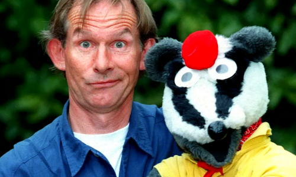

Bodger & Badger
This article may be Overly Bri'ish
Americans may not understand humour. Canadians and Australians may not understand anything at all.

| Created by | Andy Cunningham |
| County of origin | United Kingdom |
| No. of series | 9 |
| No. of episodes | 124 |
Bodger and Badger was a BBC childrens TV series which was first broadcast in 1989 and continued up until the highly controversial Mashed Potato suicide episode in 2000, in which the writers put a brutal and twisted end to the show when Badger drowned himself in mashed potato. Despite this, the show was proved incredibly popular amongst youngsters and was a flag ship show for CBBC, while winning critical acclaim in the process. It won various awards, including 27 BAFTAs, 3 Nuts Magazine Best Comedy Awards and 1 NME Award (which was for the duo's hip-hop album 'Bangin' Bitches Mofo Style').
The show, despite the praise, incurred the wrath of Daily Mail readers and other critics for its risque and controversial material which was deemed unsuitable for children. It is also infamous for its continuity errors which blighted the show during it's 11 year tenure.
- 1Plot
- 2Characters
- 2.1Series 1
- 2.2Series 2-9
Plot
The show centred around the kind natured Simon Bodger (played by actor Andy Cunningham) who sat at home and earnt a living through the benefits system, and his crazy companion, the affable Badger. Slapstick comedy was a common feature throughout the show, even if it did get graphically violent in some episodes. It was also notorious for its jokes and pranks which centred around mashed potato, scheming the slimy Mr Smart and Mrs Dribelle, and fooling Bodger into tax fraud and drug dealing.
To reveal the extent of the slapstick and crude humour over the course of the shows life span, stats for the show state that Bodger slipped on Badger's mashed potato 12,141 times and Badger messed up Bodger's living room in fecal matter 842 times resulting in literal sticky situations. It was also revealed that in total, Badger, in an effort to get attention, bit Bodger's testicles 899 times over the 11 years the programme was shown.
Simon Bodger would often be on the wrong end of his house guests and, much to the disgust of parents watching the show, swore excessively at them. One such episode had Bodger finally crack at the bossy Mrs Dribelle, in which he lost his temper, trashed the house and screamed 'Fuck off you flabby cuntflapped bitch!'. This temper became a prime feature of the show and added to the comedic effect - particularly during the running gag when his face would be splattered with mashed potato and his right hand would become shit stained due to it being shoved up Badger's arse for a full show.
Bodger would also attempt on many occasions to set mouse traps in order to catch Badger's friend, Mousy. This would always have disastrous consequences for Bodger as Badger would put the mouse traps in his bed, resulting in painful consequences.
Characters
Series 1
Series 2-9
| The Master | Original • |